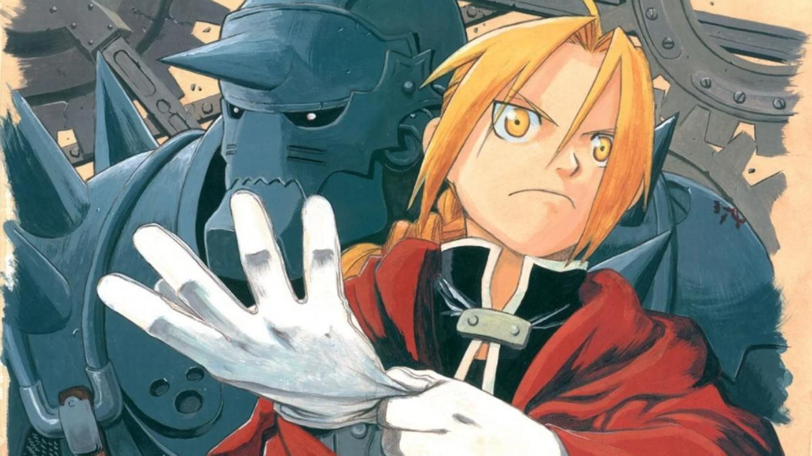

Anime News
Anime
Fullmetal Alchemist tendrá un nuevo proyecto por su vigésimo aniversario
Square Enix inauguró nuevo sitio web para celebrar el vigésimo aniversario del manga Fullmetal Alchemist de Hiromu Arakawa. Este nuevo sitio anunciará nuevos proyectos para el aniversario en el futuro y también muestra una imagen del personaje Scar y una cuenta atrás que finalizará el próximo 2 de marzo.
Por otra parte, Arakawa comenzó la publicación del manga en la revista Monthly Shonen Gangan de la editorial Square Enix en julio de 2001 y la finalizó en junio de 2010. La editorial recopiló la obra en un total de veintisiete volúmenes. El manga fue adaptado al anime en dos ocasiones, el primero en 2003 y titulado Fullmetal Alchemist; y el segundo en 2009 y titulado Fullmetal Alchemist Brotherhood.
Cultura Otaku
Autores que fallecieron antes de poder terminar su obra.

Todos los fanáticos se afligen al darse cuenta de que su anime y manga favoritos ya no continuarán, ya que la persona detrás de la obra maestra ha fallecido demasiado pronto. Es como golpear el corazón de alguien con dos piedras: La historia que sigues cada semana ya no llegará a su conclusión y el pobre autor murió, lo que por sí solo es deprimente. ¿Qué otro autor recuerdas que haya fallecido antes de terminar su manga o novela ligera?
Mercancías
Kaguya-sama: Love is War. Miko Iino inspira una linda figura a escala

La compañía fabricante Animaru! anunció el lanzamiento de una figura a escala 1/7 basada en el personaje Miko Iino de la franquicia multimedia de Kaguya-sama: Love is War (Kaguya-sama wa Kokurasetai: Tensai-tachi no Renai Zunousen) para julio de 2022.
El pedestal está basado en el color de la imagen de Miko, el naranja, y se ha diseñado para que se parezca a la alfombra de la sala del consejo estudiantilLa figura tiene una altura de aproximadamente 210 mm, tendrá un precio de 15,400 yenes (alrededor de 133 dólares) y se encuentra disponible para reservación en el sitio oficial del distribuidor en el periodo comprendido del 10 de febrero al 10 de abril de este año.
Recomendaciones
Para las tardes, despues de terminar los deberes.

Si buscas animes que ver, después de ingnorar por enesima vez tu lista de "Animes por ver", esta sección es para ti, dónde vas a encontrar desde animes Shoujo hasta animes Ecchi, para todos gustos y colores, claro, sin olvidar una pequeña reseña para que puedas entender que es lo que vas a ver.
Noticias Xpress
Anime
La película Dragon Ball Super: Super Hero llegará a cines de Latinoamérica este año

La plataforma Crunchyroll emitió un comunicado de prensa anunciando que, como compañía, se encargará de la distribución de la próxima película de Toei Animation, Dragon Ball Super: Super Hero en cines de “todo el mundo” este año. Esto incluye evidentemente a Latinoamérica, en donde la cinta llegará a cines de los distintos países tanto en formatos doblado como subtitulado.
Cultura Otaku
Conoce la aplicación de QooApp para encontrar videojuegos de anime

Además del manga y el anime, las franquicias más populares en Japón generalmente recurren también a los videojuegos para smartphones. Estos tipos de lanzamientos, debido a que comúnmente optan por un formato de batallas por turnos y una larga historia, nunca salen de Japón debido a lo difícil que es realizar la traducción de todos los textos (en este caso, el espacio que ocupa un texto en japonés nunca es el mismo que el que ocupa la traducción al inglés).